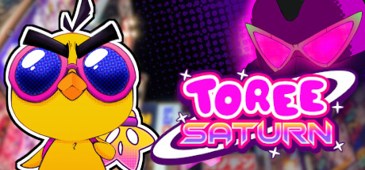

Burning Snow

Burning Snow is a awesome little short game created by justcore available to download on itch.
This game was a fun little experience that reminds me of what i have heard about a short hike. The game was really simple
but was inspiring for me who wants to start creating small games. The
the stylized graphics were really cool and the game just looked really pretty overall.
The end of the game was very unexpected, and I like games that do that.
I highly recomend anybody with some free time to download this game and play it.
Toree Saturn

Toree Saturn is a 3D platformer created by developer Siactro, and was an absolute blast to play through.
I first saw gameplay of it as footage in a youtube video,
and the second I layed eyes on it, I new I needed to play it. The Y2K and 90s inspired artstyle along with the music just perfect,
and some the enviornments of this game just feel like a paradise I would want to live in. I've never really been into momentum
platformers, but this game really makes me want to get into the genre, and replaying a level over and over to get S rank
feels so rewarding once you actually get it.
The story of this game is straight peak, and there is just so much packed into this title, including a lot of bonus
areas and easter eggs from the developer's other games.
I had a blast playing this game, and highly recomend buying the game (its only five bucks) or at least downloading the demo,
which is on both steam, and switch.